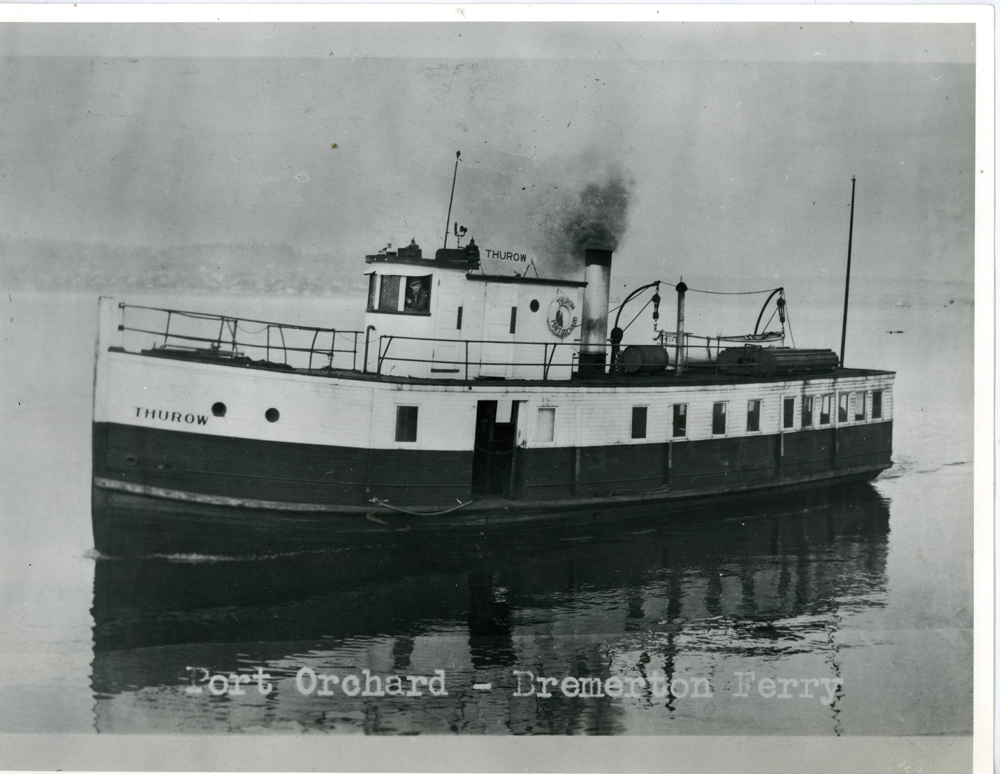

The Great Depression: An End to Competition
The arrangement enjoyed by the two remaining lines was upset by the Great Depression of the 1930s which caused the same economic downturn in the Northwest as it did in the rest of the country. It was fertile ground for union organizing and ferry workers eagerly signed up in the hope of attaining the level of wages that prevailed on San Francisco Bay ferries.

In November of 1935 the ferry-based unions struck Kitsap County Transportation Company. Knowing it would ruin the opposition; Captain Peabody of the Black Ball Line tried to avert the strike, and ultimately offered to share any windfall to PSN from increased revenue during the strike. The White Collar Line responded with an offer to sell-out. By that time Black Ball had also been hit by strikes and most service on Puget Sound was halted by a thirty-three day work stoppage. Black Ball weathered the strike and was able to acquire Kitsap County Transportation Company by agreeing to assume $140,000 in liabilities.